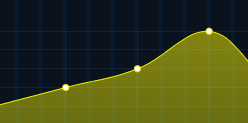

<!DOCTYPE html>
<html lang="en">
<head>
    <meta charset="UTF-8">
    <meta name="viewport" content="width=device-width, initial-scale=1.0">
    <title>Weather App</title>
    <link rel="preconnect" href="https://fonts.googleapis.com">
    <link rel="preconnect" href="https://fonts.gstatic.com" crossorigin>
    <link href="https://fonts.googleapis.com/css2?family=Noto+Sans+JP:wght@100..900&display=swap" rel="stylesheet">
    <link rel="stylesheet" href="./lib/slick/slick.css">
    <link rel="stylesheet" href="./lib/slick/slick-theme.css">
    <link rel="stylesheet" href="./lib/fontawesome/css/all.min.css">
    <link rel="stylesheet" href="./css/public.css">
    <link rel="stylesheet" href="./css/main.css">
    <link rel="stylesheet" href="./css/chart.css">
    <link rel="stylesheet" href="./css/respond.css">
</head>
<body class="loading">
    <div class="overlay">
        <div class="overlay__inner">
            <div class="overlay__content"><span class="spinner"></span></div>
        </div>
    </div>
    <header>
        <div class="wrap bg">
            <div class="slider slider-nav"></div>
        </div>
    </header>
    <main>
        <div class="wrap">
            <div class="slider slider-for"></div>
        </div>
    </main>
    <footer>
        <div class="wrap bg footer-wrapper">
            <div class="f-col"><span>風向き</span></div>
            <div class="f-col"><span style="width: 15px; height: 15px; background-color: aqua; display: inline-block; margin-right: 5px;"></span><span>波高</span></div>
            <div class="f-col"><sspan>潮汐</span></div>
        </div>
    </footer>
    <script src="https://code.jquery.com/jquery-1.11.0.min.js"></script>
	<script src="https://code.jquery.com/jquery-migrate-1.2.1.min.js"></script>
    <script src="https://cdnjs.cloudflare.com/ajax/libs/Chart.js/2.9.4/Chart.js" integrity="sha512-hZf9Qhp3rlDJBvAKvmiG+goaaKRZA6LKUO35oK6EsM0/kjPK32Yw7URqrq3Q+Nvbbt8Usss+IekL7CRn83dYmw==" crossorigin="anonymous" referrerpolicy="no-referrer"></script>
	<script type="text/javascript" src="./lib/slick/slick.js"></script>
    <script src="./lib/csv/jquery.csv.js"></script>
	<script type="text/javascript" src="./js/main.js"></script>
</body>
</html>